Keep as much precision as possible.
Help programmer with errors in real arithmetic(infinity, NaN, exponent overflow, etc)
Keep encoding such that it is somewhat compatible with two's compliment.

Content:
One of my favorite courses I have ever taken. I really began to understand the inner workings of a computer. This class helps to demystify the hardware-software interface.
The five great ideas in Computer Architecture:
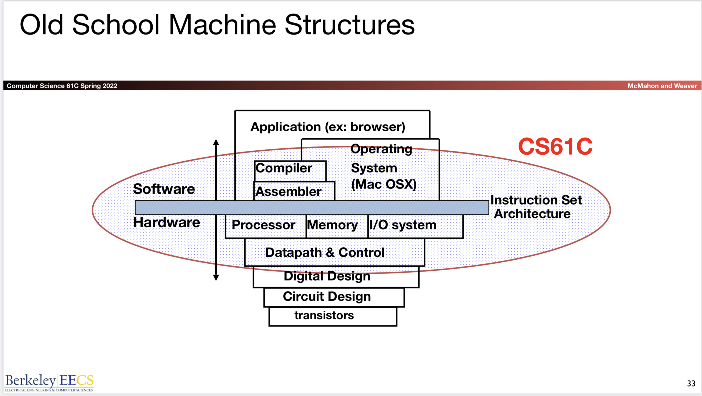
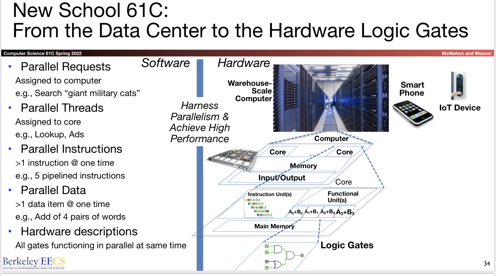
Abstraction(layers of representation/Interpretation
Moore's Law(designing through trends)
Principle of Locality(memory hierarchy)
Parallelism & Amdahl's law
Dependability vs Redundancy
Binary: a method of representing numbers using a string of 0s and 1s. The fundamental building block of a computer is a transistor which can only represent two values. Out of simplicity there two values are 0 and 1. Denote a binary number by prepending "0b" or appending a subscripted 2.
Terminology:
Bit: 1 binary digit, Nibble: 4 binary digits, Byte: 8 binary digits
Base: the number of different digits that a system has to represent numbers.
Most Significant bit(MSB): the bit in the highest position(typically furthest to the left).
Least Significant bit(LSB): the bit in the lowest position(typically furthest to the right).
Not leading zeros don't change the value.
Binary Addition/Subtraction: same as elementary stack on top of each other addition. Overflow occurs when you cannot represent the result of the operation in the given number of bits.
With n binary digits(bits) we can represent 2^n values/things. If our range starts at 0 then we can represent [0,2^n - 1] values.
Conversion(Binary to Decimal | Decimal to Binary):
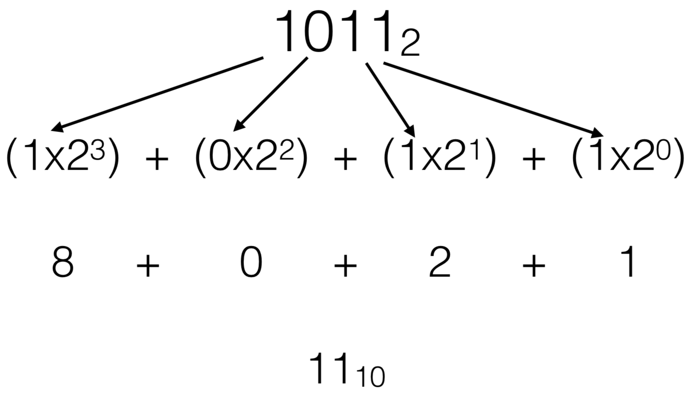
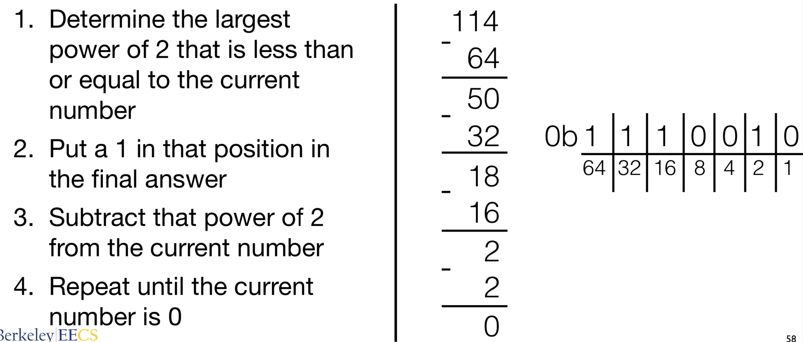
Hexadecimal: method of representing binary that's easier for humans to read, base 16. One hex digit can represent 16 numbers. One hex digit = 1 nibble.
With n hex digits(4 bits) we can represent 16^n values. If our range starts at 0 then we cna represent [0,16^n - 1] values.
Denote a hexadecimal value by prepending "0x" or appending a subscripted 16.
Conversion:
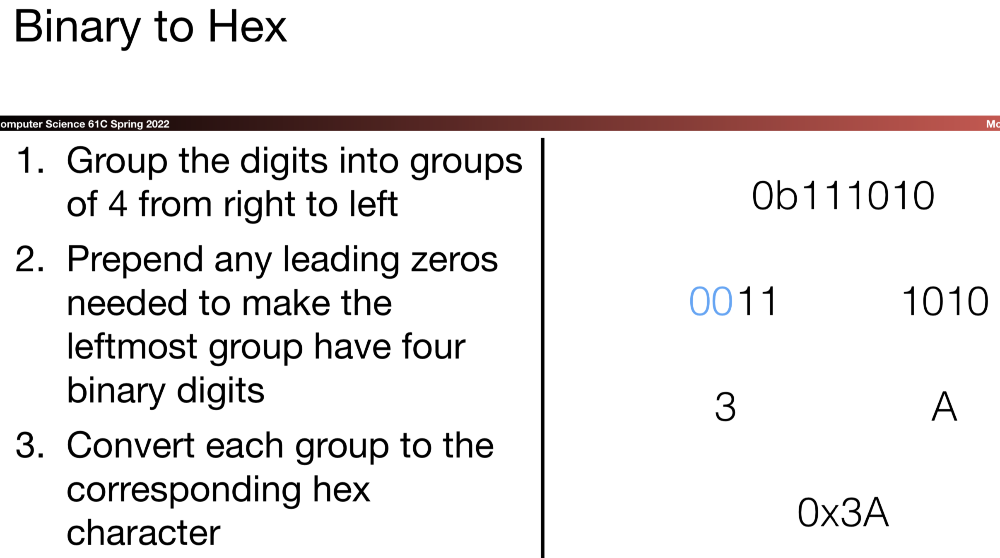
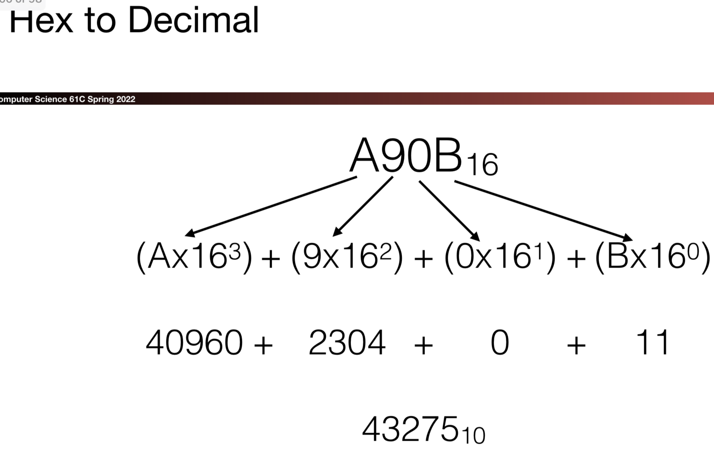
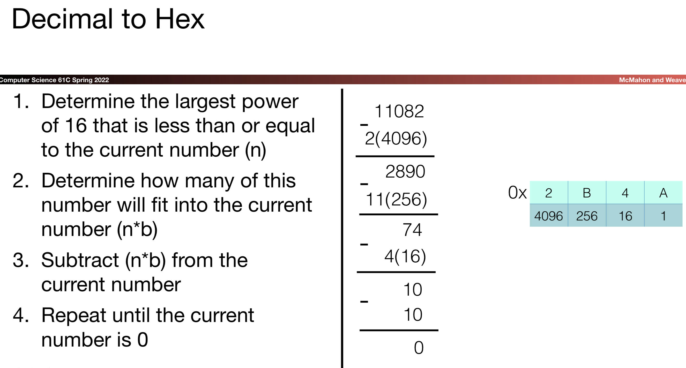
We need a way to represent negative values. This scheme does just that:
The MSB represents the sign of the value: 0 for positive and 1 for negative. The remaining bits represent the magnitude of the number.
Example: -5
Sign: 1 | Magnitude: 0101 thus the answer = 10101
Range of Sign and Magnitude: Recall the range or unsigned representation is [0,2^n - 1]. We can represent this range minus one bit for the sign in both positive and negative values thus [-(2^(n-1) - 1), 2^(n-1) - 1].
There are problems with Sign and Magnitude. There are two zeros since we can have negative and positive zero this doesn't make any sense. This makes it difficult to implement in hardware.
To eliminate the two zeros we face in the Sign and Magnitude representation we implement Two's Complement.
To represent the negative value take the positive value flip the bits and add one.
Range of Two's Complement: We shifted the negative values over by one, eliminating the negative zero, and meaning that we can represent one more negative value. Thus we have [-(2^(n-1), 2^(n-1) - 1)] values.
Two's Complement Addition/Subtraction: works just at normal binary addition in this case for subtraction just add the two complement(negative value).
Two's Complement Overflow: when the result of an operation cannot be represented in the given number of bits. When adding two positive numbers overflow occurs when the result if negative. When adding two negative numbers, overflow occurs when the result is positive. Overflow will never occur when adding two numbers of opposite signs.
Examples:
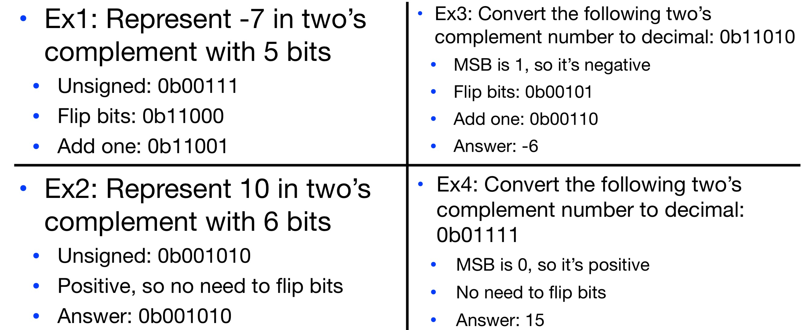
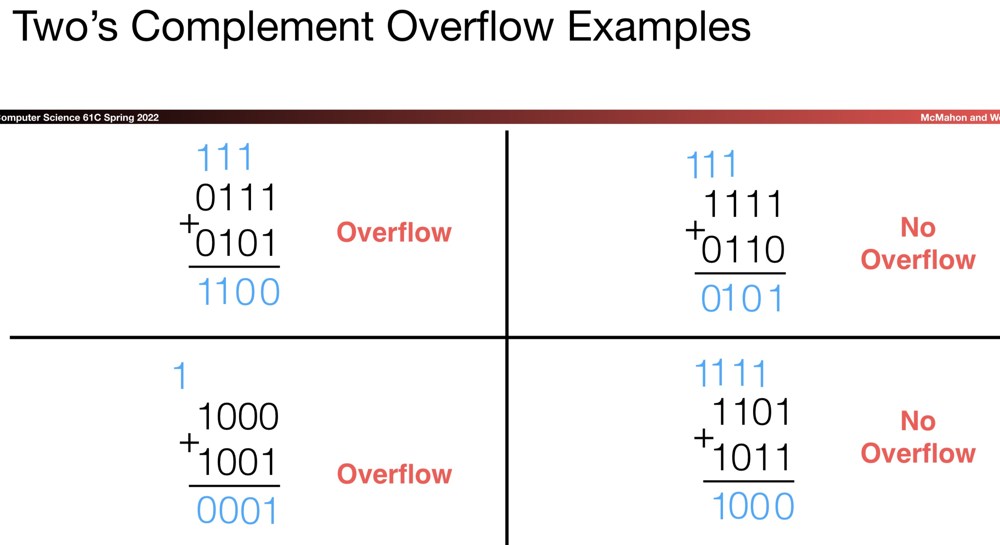
A method for storing a range or values where the lowest value is encoded as all zeros.
Bias Encoding Convention: non-biased -> bias then subtract the bias | bias -> non-biased add the bias
Bias Formula for 2's Complement number with n bits: N = -(2^(n-1) - 1)
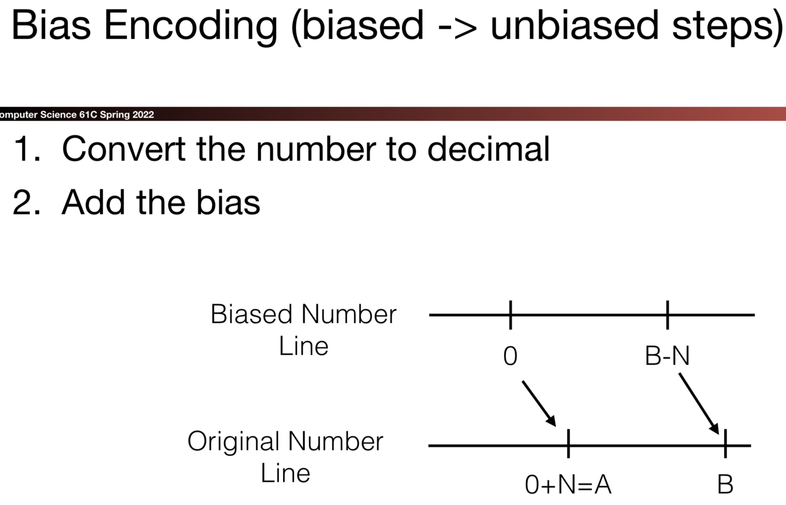
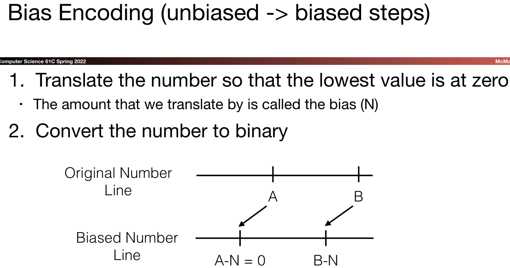
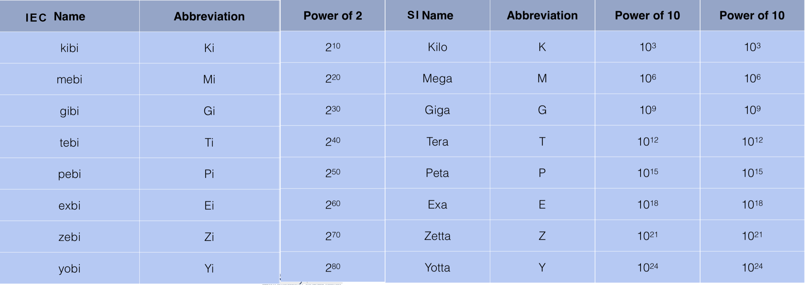 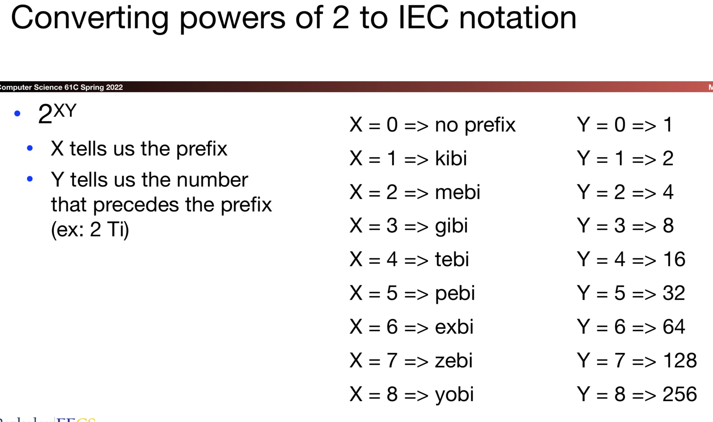
"C is not a "ver high-level" language, nor a "big" one, and is not specialized to any particular are of application. Buts its absence of restrictions and its generality make it more convenient and effective for many tasks than supposedly more powerful languages" -Kernie and Ritchie. Enabled the first operating system not written in assembly language: UNIX - a portable OS.
In C programs that allow us to exploit underlying features of architecture(memory management, etc) adn do it in a portable way(C compilers universally available for all existing processor architectures).
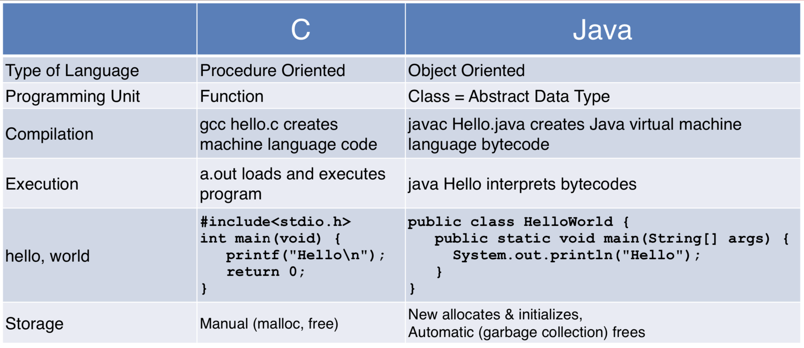
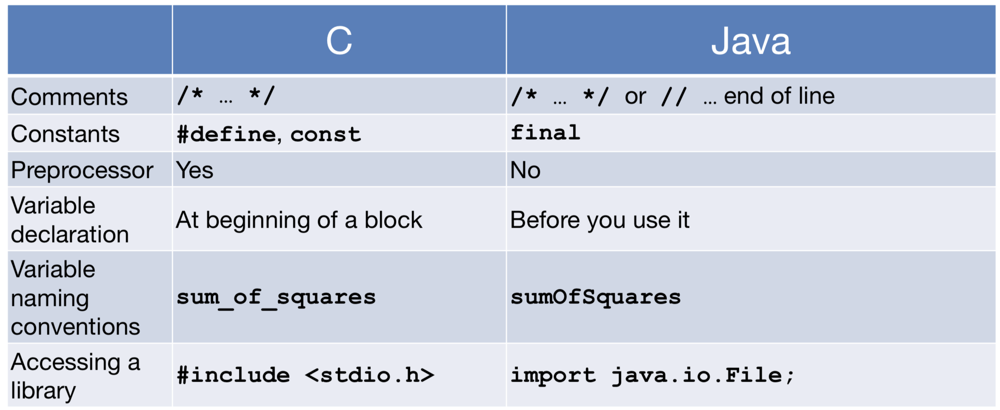
Must declare the type of data a variable will hold, the type of data a function will return, the type of data arguments are, and declare functions(usually in a separate header file).
Variable Declarations: All variable declarations must appear before they are used. All must be at the beginning of a block. A variable may be initialized in its declaration.
C only guarantees minimum and relative size of "int" "short" etc. If you need to know the exact size specify with uint8_t(8 bit unsigned integer) or int64_t(64 bit integer) etc.
Constant is assigned a typed value once in the declaration; value can't change during the entire execution of program.
Structs are structured groups of variables with type. Stucts allocate enough memory and padding for all said parameters.
Unions are structure groups of variables with type, but the memory allocated is for the largest type in the union. Essentially one var is active in a union.
Control Flow: very similar to Java. if-else, while, for, switch, goto.
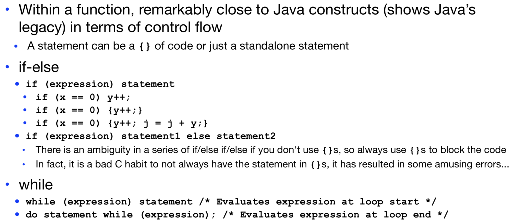
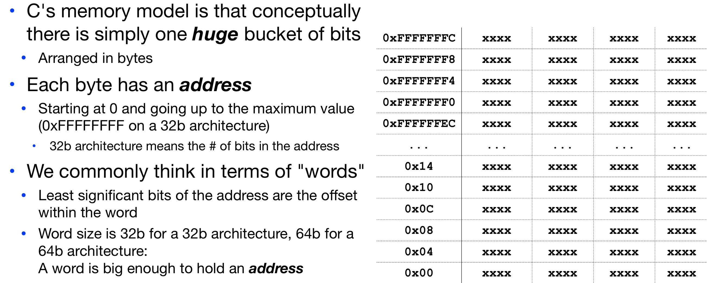
An address refers to a particular memory location aka it points to a memory location.
Pointer: a variable that contains the address of a variable.
C as well as Java pass basic parameter "by value" we can use pointers to pass "by reference".
Important to Pointer Arithmetic is the compile time operation sizeof() takes an arg such as char; sizeof(structtype)
You can cast basic C types.
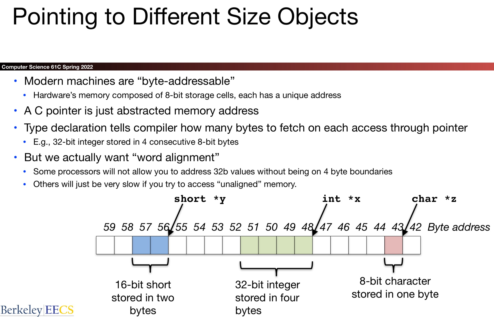
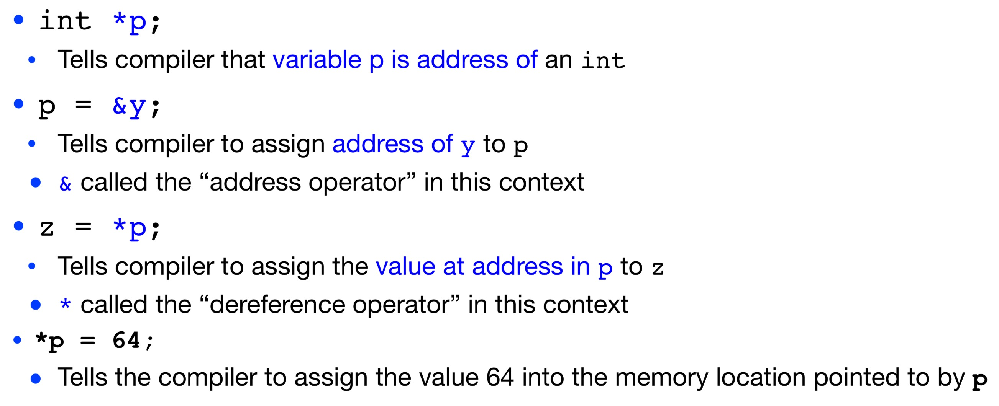
In C Array variable is simply a "pointer" to the first (0th) element. Os array variables are almost identical to pointers: char *string and char string[] are nearly identical declarations. Thus a[i] == *(a+1). Note an array is passed to a function as a pointer so the array size is lost so we must pass the size with it.
C strings are just arrays of chars: char string[] = "abc". Last character is always followed by a 0 byte(null terminator "\0"), the string length operator stops at this terminator and does not include it in the length it returns.
To get arguments to the main function use: int main(int argc, char *argv[])
agrc: contains the number of strings on the command line
argv: pointer to an array containing the arguments as strings
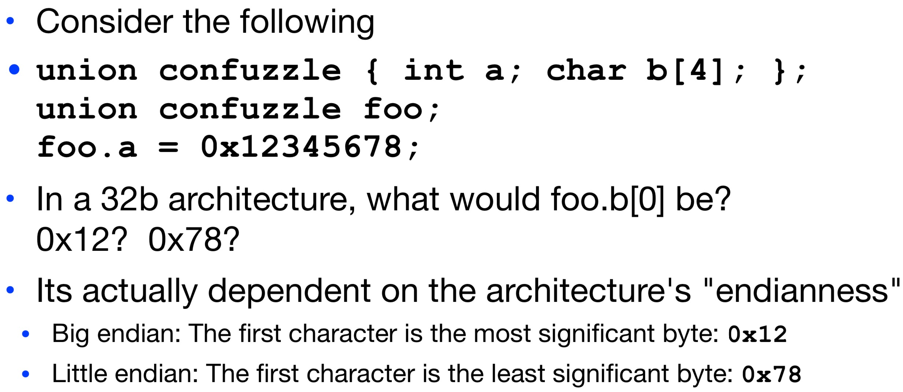
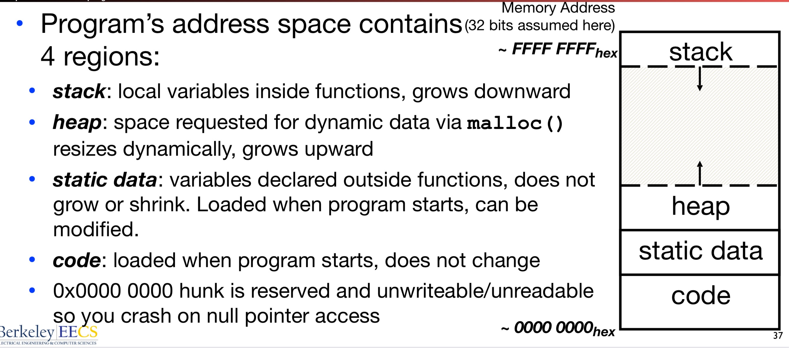
If declared outside a function allocated in "static" storage.
If declared inside the function, allocated on the "stack" and freed when function returns(Note main() is treated like a function).
For both of these types of memory the management is automatic: no need to deallocate when no longer using, but a variable DNE once a function ends.
Every time a function is called, a new "stack frame" is allocated on the stack.
Stack frame includes: return addresses, arguments, space for local variables.
Stack frames use contiguous blocks of memory; stack pointer indicates start of stack frame. When function ends stack pointer moves up; frees memory for future stack frames.
C functions for heap management:
malloc(): allocate a block of uninitialized memory
calloc(): allocate a block of zeroed memory
free(): free previously allocated block of memory
realloc(): change size of previously allocated block(Note block may move and will not update pointers pointing to the same block of memory)
Code and static storage are easy: they never grow or shrink
Stack space is relatively easy: stack frames are created and destroyed in last-in, first-out order(LIFO)
Managing the heap is tricky: memory can be allocated/deallocated at any time
If you forget to deallocate memory: "Memory Leak"(program will eventually run out of memory)
If you call free twice on the same memory: "Double Free"(possible crash or exploitable vulnerability)
If you use data after calling free: "Use after free"(crash or exploitable vulnerability)
Examples:
Failure to free allocated memory. Remember to free memory upon function return or don't loose the pointer to memory in a callee function then you won't be able to free the memory.
Writing off the end of arrays.
Returning pointers up into the stack. Say a callee returns an array what was declared in itself. Then jumping back up the stack that array will eventually be overwritten.
Trying ti access memory that has been freed likely won't be the same memory and get incorrect results.
Free the wrong stuff, freeing things that weren't malloc'd. Or double freeing something.
These are the default alignment(centered around a "32b architecture": integers and pointers are 32b values):
char: 1 byte, no alignment needed when stored in memory.
short: 2 bytes, 1/2 word aligned
int & pointers: 4 bytes, word aligned
We have the boolean operations:
|| := boolean or
&& := boolean and
We have the bitwise operations:
Treat the data as raw bits and apply them on a bit by bit bases.
| := bitwise or, Ex: 0b0011 | 0b0101 = 0b0111
& := bitwise and, Ex: 0b0011 & 0b0101 = 0b0001
^ := bitwise xor, Ex: 0b0011 ^ 0b0101 = 0b0110
We have the bit shift operations:
a << b := shift the value in a to the left by b bits, shifting in 0.
Equivalent to multiplying by 2^b
0b00101 << 2 = 0b10100(Note bits off the left are dropped)
a >> b := shift the value in a to the right by b bits.
If a is signed we sign extend(copy MSB)
Ob10100 >> 2 = 0b11101
If a is unsigned we zero extend
0b10100 >> 2 = 0b00101
Note this is not quite the same as dividing by 2^b due to rounding.
Standard arithmetic for all computers(important because computer representation of real numbers is approximate).
Keep as much precision as possible.
Help programmer with errors in real arithmetic(infinity, NaN, exponent overflow, etc)
Keep encoding such that it is somewhat compatible with two's compliment.
Mantissa: In normalized form there must be one non-zero number to the left of the point, in binary the only non-zero number is 1 so every binary number written in normalized form will have 1 to the left of the point(except 0). We can save a bit by not storing this 1.
Exponent: Is written in biased notation so that the smallest number is written as all zeros. The range is [-126,127]. The exponent is biased by adding 127 to get the number into the range [1,254]; 0 and 255 have special meanings.(Note we bias the exponent so comparisons are easier because you can just perform an unsigned comparison). For IEEE-754 32 bit floating point numbers there are 8 exponent bits: Bias = -(2^(8-1) - 1) = -127
Range of floating point: Positive: [2^-126, (2 - 2^(-23) * 2^127)] Negative: [-(2 - 2^-23) * 2^127, -2^(-126)]
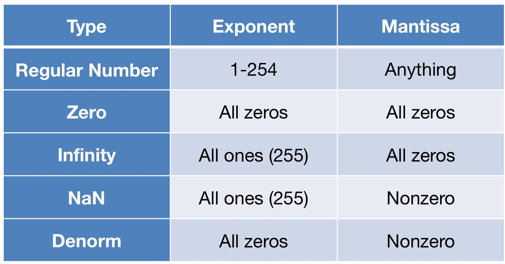
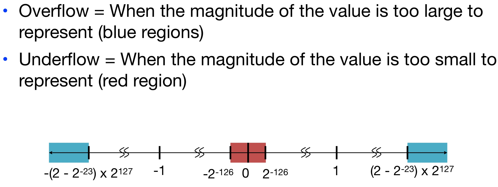
Floating Point Step Size:
If x is the biased exponent and y is the significand; how do we write our current number in terms of x and y?
(1 + y) * 2^(x-127)
How do we write the next number in terms of x and y?
(1 + y + 2^(-23)) * 2^(x-127)
So Step Size = next_num - current_num: (1 + y + 2^-23) * 2^(x-127) - (1 + y) * 2(x-127) = 2^(x-150)
The step size increases by a factor of 2 every time the exponent increases by 1.
Denormalized Numbers: The gap between 0->(smallest positive number) = 2^-126 but the gap between 2^-126->(the next smallest positive number) = 2^-149. Denormalized numbers allow us to get closer to zero. An exponent field of all zeros encodes a denormalized number.
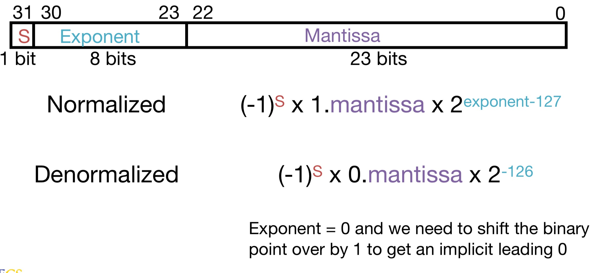
Range of Denormalized Floating Point: Positive[2^-149, 2^-126 - 2^-149] Negative[-(2^-126 - 2^-149), -(2^-149)]
Denormalized Floating Point Step Size: The step size is the same for all denorm values because the exponent stays constant: 2^-149.
Rounding issues will occur:
Round to Nearest: round to nearest number; if the number falls midway it is rounded to the nearest value with an even(zero) least significant bit, which means its rounded up/down 50/50 percent.
Round toward 0: truncate
Round toward positive infinity: round up always.
Round toward negative infinity: round down always.
Floating Point addition is not associative
Assembly Language: Basic job of a CPU: execute instructions one after another in sequence, each instruction does a small amount of work.
Different CPU's implement different sets of instructions. The set of instructions that a particular CPU implements is called its Instruction Set Architecture(ISA).
RISC(Reduced Instruction Set Computer): A single instruction can only perform one operation. Keep the instruction set small and simple, makes it easier to build fast hardware. Philosophy developed by Cocke IBM, Patterson, Hennessy, 1980s
Unlike high-level languages like C or Java assembly languages do not use variables. Instead they use registers, small storage units that are located in the processor. Operations are performed on registers. Registers are extremely fast due to their location and size.
Notes: 32 registers in RISC-V, word = 32 bits, Register FIle: the general purpose registers inside of the processor.
Registers are numbered from 0 to 31; referred to as x0-x31. x0 always holds the value 0. Registers have no type.
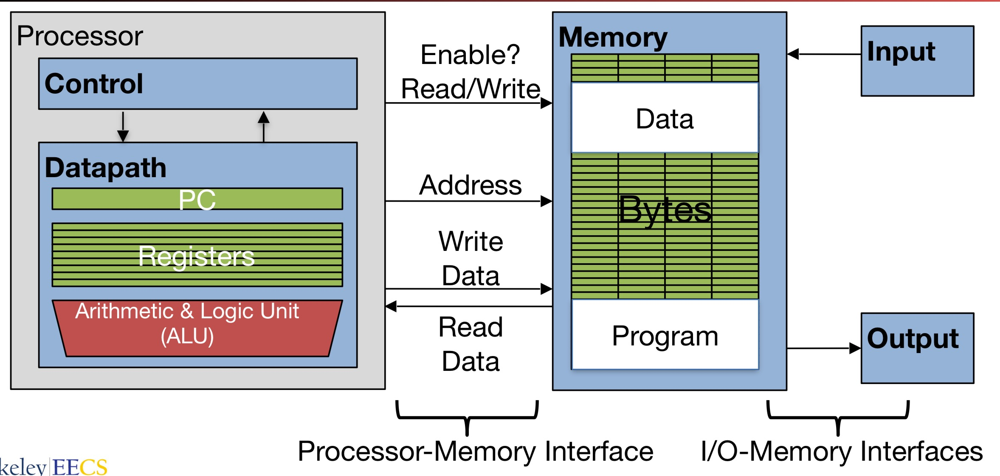
Each RISC-V is 32 bits wide, its broken down into different field in an order corresponding with its respective instruction type format.
opcode: partially specifies which instruction it is.
funct7+funct3: combined with opcode, these two fields describe what operation to perform.
See Green Card for specificities.
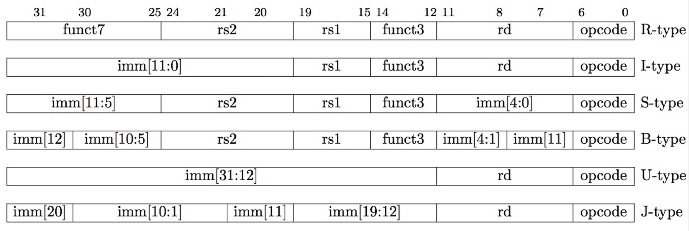
See green card for function specificities.
Shifting:
Shift Left Logical:
Shift left by a register value
sll x10, x11, x12 #x10 = x11 << x12
Shift left by a constant value:
slli x10, x11, 2 #x10 = x11 << 2
Shifting left the left bits fall off and zeros are inserted on the right. Left shifting by n is equivalent to multiplying by 2^n.
Right Shift Logical:
shift right by register value or immediate: the bits on the right fall off and zeros are inserted on the left.
srl|i x10, x11, x12/2 #x10 = x11 << x12|2
Right Shift Arithmetic:
shift right by register value or immediate: the bits on the right fall off and the bits are sign extended.
sra|i x10, x11|2, x12 #x10 = x11 >> x10|2
Right shifting positive numbers and even numbers is equivalent to dividing by 2^n with the factional part of the result being truncated. Right shifting by negative odd numbers is equivalent to dividing by 2^n and rounding the result towards negative infinity.
Branching:
Branch instructions change the control flow of the program. There are two types of branch instructions: conditional and unconditional.
Labels are used to give control flow instructions a place to go.
Note blt and bge perform signed comparisons of the numbers. To perform unsigned comparison use bltu and bgeu.
Program Counter: is a register that holds the memory address of the instruction being executed.
When we jump to a function we need a return address use jal rd, label(rd=register where the return address will be stored). When we jump because of a loop or branch we don't need a return address we can use jal x0 label == j label. Note label is a 20 bit offset so we cannot jump everywhere in memory, so we have another instruction: jalr rd, rs, imm(rd=register where return address is stored, rs=register containing the base address, imm=immediate value to be added to the base register, PC=rs+imm. Conditional branch instructions have a limited range of +- 2^10 32 bit instructions. J format branch instructions have a range of +- 2^18 32 bit instructions. JALR branch instructions have a range of 2^12 instructions.
When we call another function, we assume the registers are overwritten. If the caller register are need for future use we have to save them into the stack. Calling convention delegates that the caller save temporary registers and the callee saves saved registers.
PC Relative Addressing: jump to a location based on the current location of the PC: PC + offset.
PC Absolute Addressing: jump to a location using that locations full address. LUI and AUIPC can be used to jump via PC relative or absolute addressing.
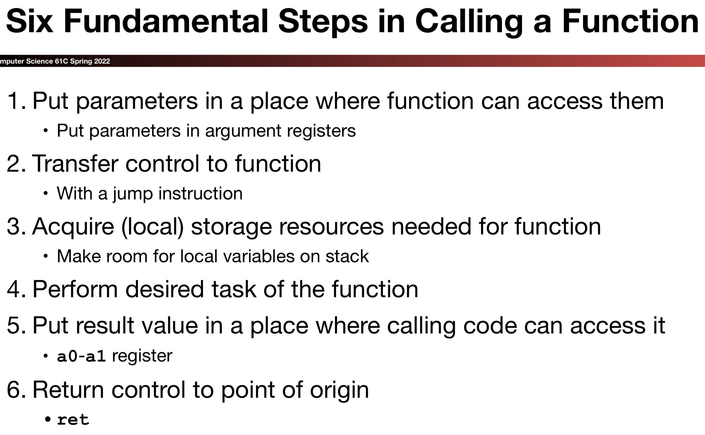
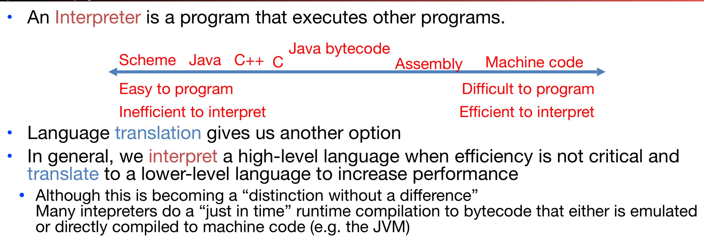
Interpreter: Directly executes a program in the source code. Its generally easier to write an interpreter. Interpreter closer to high-level so it can give better error messages. Interpreter is slower, code smaller. Interpreter provides instruction set independence: run on any machine.
Translator: Converts a program from the source language to an equivalent program in another language. Translated/Compiled code almost always more efficient and therefore higher performance. Compiled code does the hard work once: during compilation.

Compiler:
Input: high level language code(e.g. foo.c)
Output: assembly language code(e.g. foo.s for RISC-V)
Steps in Compiler:
Lexer: turns the input into "tokens" recognizes problems with the tokens
Parser: turns the tokens into an "Abstract Syntax Tree", recognizes problems in the program structure
Semantic Analysis and Optimization: checks for semantic errors, may reorganize the code to make it better
Code Generation: output the assembly code
Next we move to the Assembler
Assembler(a dumb compiler for assembly language):
Input: Assembly Language Code (e.g., foo.s)
Output: Object Code, information tables
Reads and Uses Directives(directives: give directions to assembler but do not produce machine instructions: .text,.data,.globl sym,.string str,.word w1...wn)
Replace Pseudo-instructions
Produce Machine Language rather than just Assembly Language
Linker:
Input: Object code files with information tables(e.g. foo.o, libc.o)
Output: Executable code(e.g. a.out)
Enable separate compilation of files(changes to one file do not require recompilation of the whole program)
Combines several objects (.o) files into a single executable
Step 1: take text segment from each .o file and put them together
Step 2: take data segment from each .o file, put them together and concatenate this onto end of text segments.
Step 3: resolve references(go through relocation table) aka fill in all absolute addresses
Resolving References:
Linker assumes first word of first text segment is at address 0x04000000
Linker Knows: length of each text and data segment, ordering of text and data segments
Linker Calculates: absolute address of each label to be jumped to and each piece of data being referenced
To Resolve References: search reference(data or label) in all "user" symbol tables, if not found search library files, once absolute address is determined fill in the machine code appropriately
Thus we have our outputted executable file containing text, data and a header.
Loader:
Input: Executable Code(e.g. a.out)
Output: program is run
Executable files are stored on disk. When one is run, loader's job is to load it into memory and start it running.
In reality, loader is the operating system(OS): loading is one of the OS's tasks, and these days the loader actually does a lot of then linking.
Step 1: Reads executable file's header to determine the size of text and data segments.
Step 2: Creates new address space for program large enough to hold text and data segments along with a stack segment.
Step 3: Copies instructions and data from executable file into the new address space.
Step 4: Copies arguments passed to the program onto the stack.
Step 5: Initializes machine registers(most registers cleared but stack pointer assigned address of 1st free stack location).
Step 6: Jumps to start-up routine that copies program's arguments from stack to registers & sets the PC.(if main routine returns, start-up routine terminates program with the exit system call.)
Simple Case: arithmetic, logical, shifts, etc instructions. All necessary info is within the instruction already, so just convert into the binary representations.
What about branches? PC Relative, so once pseudo-instructions are replaced by real ones we know by how many instructions to branch. So these can be computed. "Forward Reference" problem: branch instructions can refer to labels that are "forward" in the program. This is solved by taking 2 passes over the program, and remembering the address of the labels.
What about jumps(j and jal)? Jumps within a file are PC relative and thus can be computed. Jumps to other files we can't.
What about references to static data? la(load address) gets broken up into lui or auipc and addi. These will require the full 32 bit address of the data: auipc when we include into a relocatable block, lui when we have an absolute address. These can't be determined yet so we create two tables.
Symbol Table:
List of "items" in this file that may be used by other files. Includes- labels:function calling, data:anything in the .data section; variables which may be accessed across files.
Relocation Table:
List of "items" this file needs the address of later. Includes- any external label jumped to(including library files), any piece of data in the static section(such as the la instruction)
Object File Format:
object file header: size and position of the other pieces of the object file
text segment: the machine code
data segment: binary representation of the static data in the source file
relocation information: identifies lines of code that need to be fixed up later
symbol table: list of this file's labels and static data that can be referenced
debugging information
PC-Relative Addressing(beq, bne, jal): never relocate
External Function Reference(usually jal): always relocate
Static Data Reference(often auipc and addi): always relocate
Compiler converts a single HLL file into a single assembly language. Assembler removes pseudo--instructions, converts what it can to machine language, and creates a checklist for the linker(relocation table). A .s file becomes a .o file. Note the Assembler does two passes to resolve addresses, handling internal forward references. Linker combines several .o files and resolves absolute addresses. Enables separate compilation, libraries that need not be compiled, and resolves remaining addresses. Loader loads executable into memory and begins execution.
Digital: all values are discrete; a value can either be on(1) or off(0).
Analog: a continuous range of values.
The building blocks of digital circuits(AND, OR, XOR, NOT, NAND, NOR, XNOR)
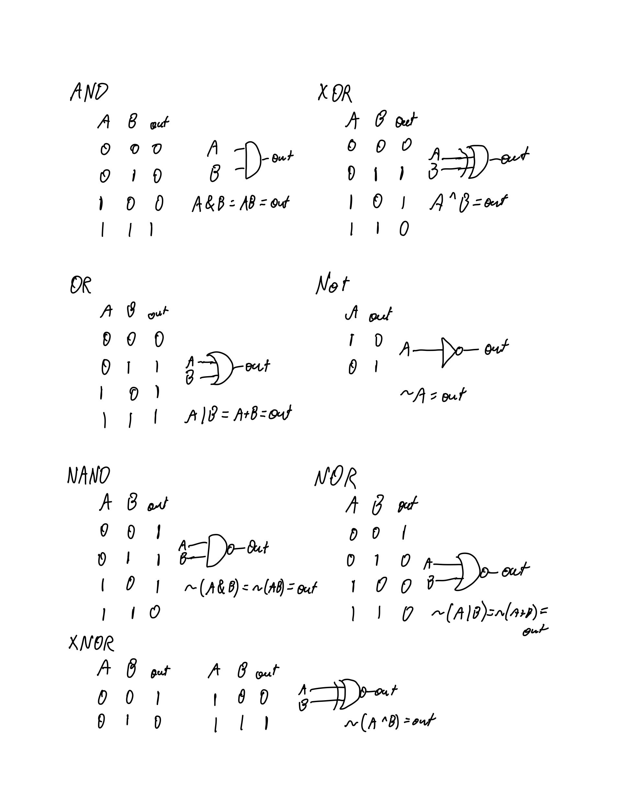
A branch of algebra in which the operands can only be 0 or 1, with the basic operations composed of AND, OR, and NOT.
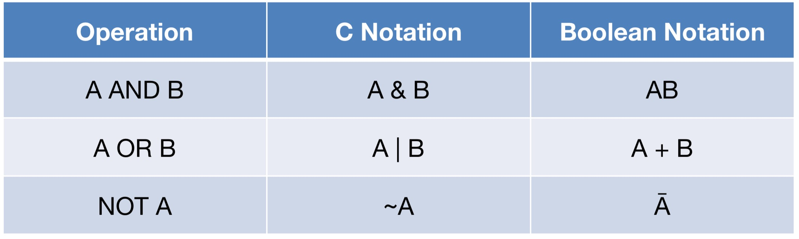
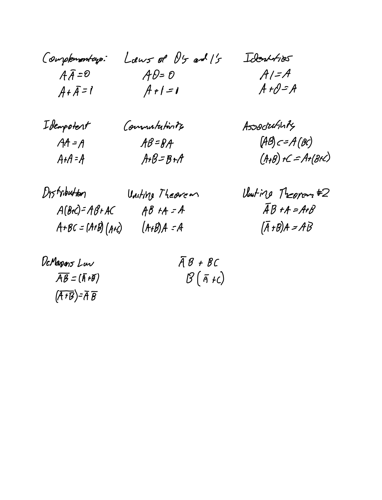
Example: an adder
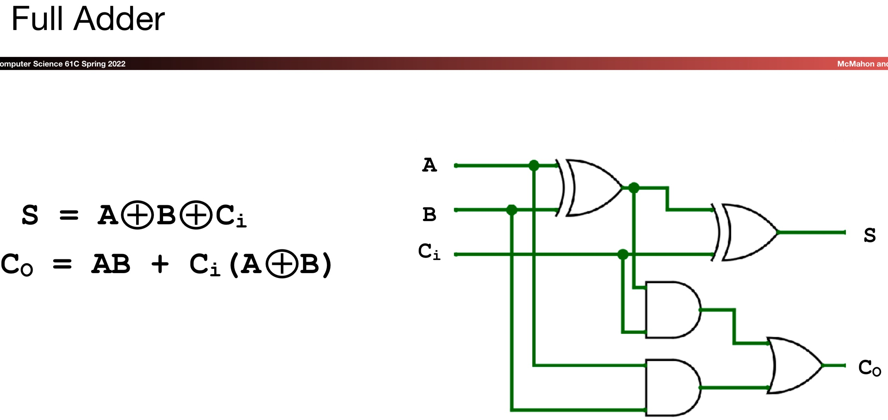
Carries out arithmetic and logical operations on integer binary numbers.
Multiplexor: selects an input to propagate to the output, out = A~S + BS.
Combinational Logic: As soon as the inputs are available, the output starts being computed. Output depends only on the current input.
Sequential Logic: Synchronized with a clock signal and output depends on a combination of inputs and previous states.
Synchronous: all operations are coordinated by something called a clock.
Clock Signal: oscillates between a high and low state; period: time between one rising edge to the next rising edge; frequency: 1/period. Unit for frequency is Hertz(Hz), a common clock frequency is 4GHz(the clock goes through 4 billion cycles every second and period = 1/4GHz or 0.25 ns)
Flip-Flops: state element(a circuit component that can hold a value), can be either asynchronous(independent of the clock) or synchronous(dependent on the clock).
D Flip-Flop: rising edge triggered(stores D to Q the instant the clock goes from 0 to 1) or falling edge triggered(stores D to Q the instant the clock goes from 1 to 0)
Clock-to-Q Delay: The amount of time that it takes for the input to propagate to the output after the clock trigger.
Set-up Time: The amount of time that the input needs to be stable before the clock trigger.
Hold Time: The amount of time that the input needs to be stable after the clock trigger.
Max Hold Time: The amount of time that it takes for the input to B to change after the trigger(clk-to-q delay of register A + combinational logic delay).
Combinational Logic Delay: The amount of time that it takes for a value to propagate through the combinational logic.
Minimum Clock Cycle(critical path): The time it takes for the input of one state element to reach the input of the next state element(clk-to-q delay + longest combinational delay + setup time).
So the question "How to store a 32 bit number?" Put 32 flip flips together and thus a register(state element) is formed. A register has an extra input Write Enable which when 0 the contents of the register stay the same but when 1 the contents of the register are updated on the clock trigger.
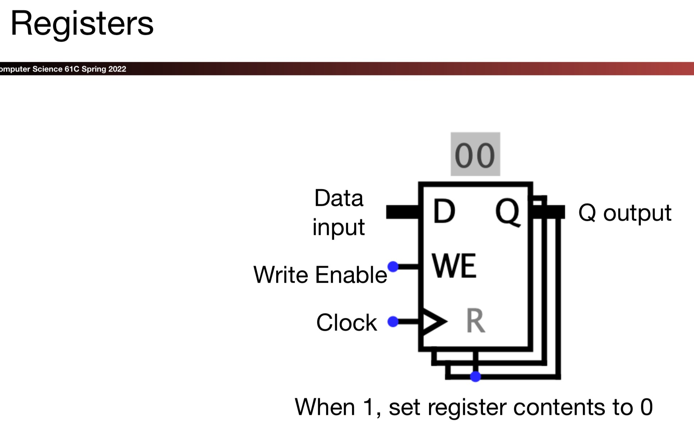
Metal Oxide Semiconductor Field Effect Transistor: three terminals(source = input, gate = controls whether the witch is open or closed, Drain = output )
nFET vs pFET Transistors:
nFET: g=1 switch is closed | g=0 switch is open
pFET: g=0 switch is closed | g=1 switch is open
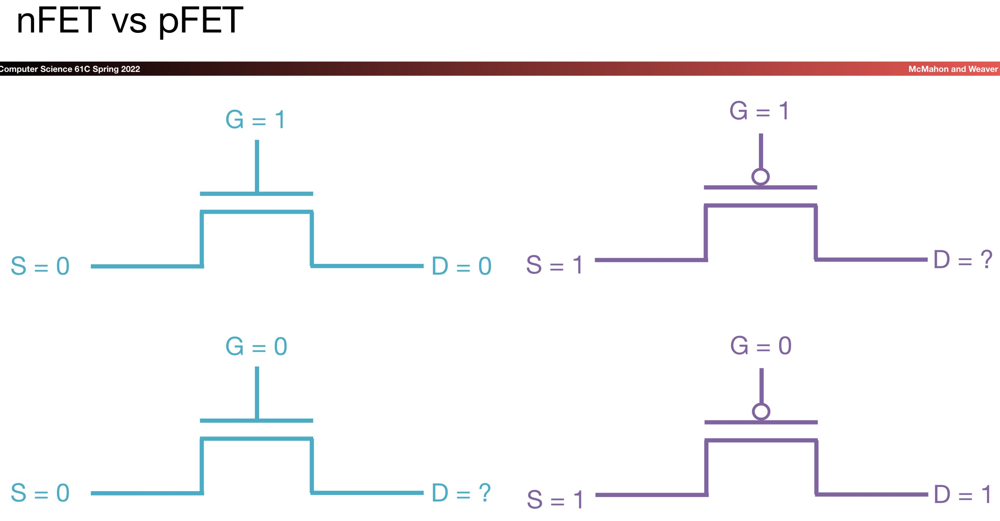
nFETs are not good at passing 1s so we usually hook up the source of an nFET to a 0. pFETs are not good at passing 0s so we usually hook up the source of a pFET to 1.
Uses complementary and symmetrical pairs of p-type and n-type MOSFETs to build logical functions. Consists of a pull-up and pull-down network.
We can construct our boolean gates with CMOS transistors.
CMOS Inverter:
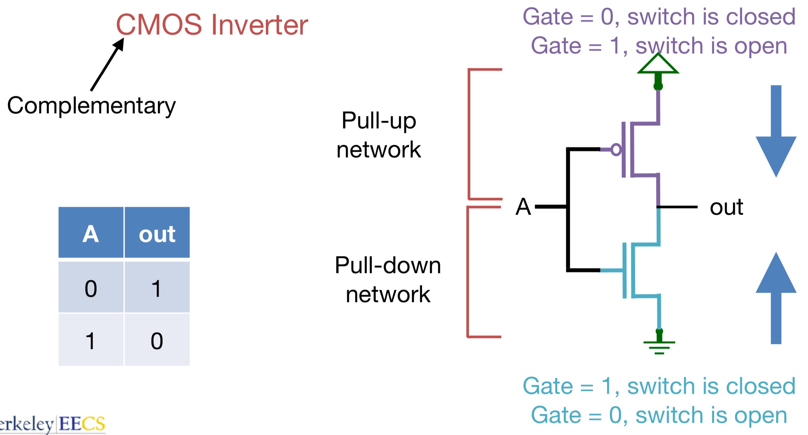
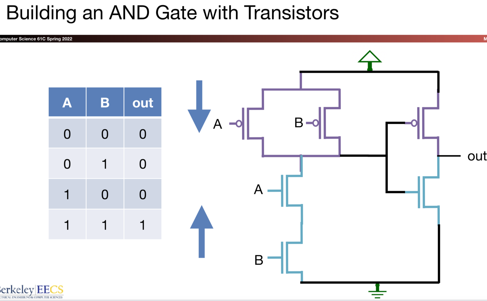
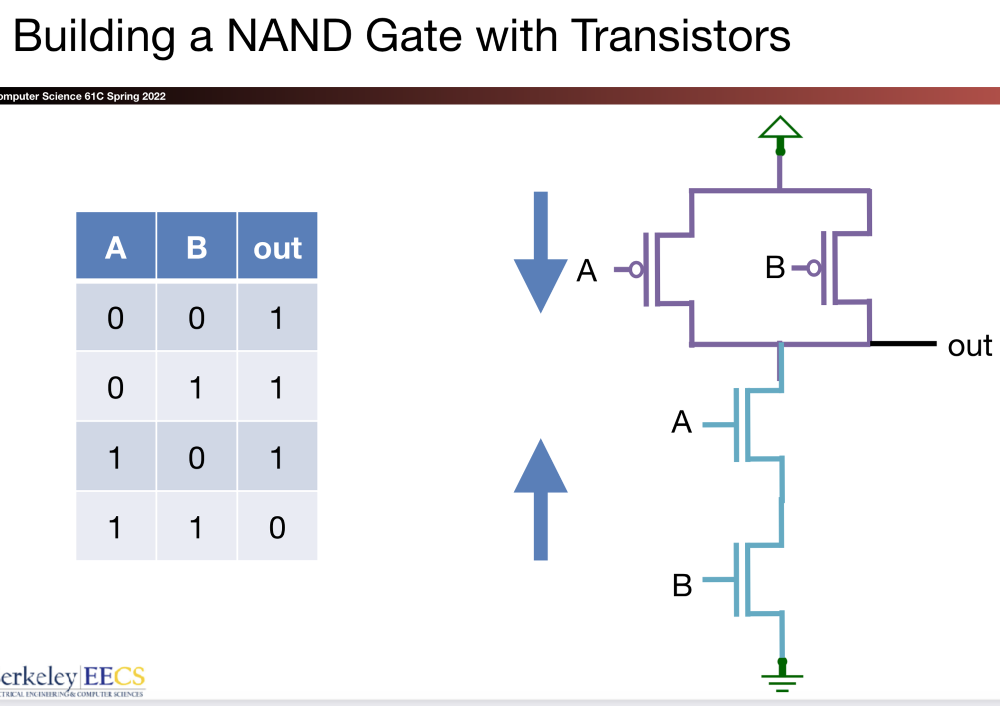
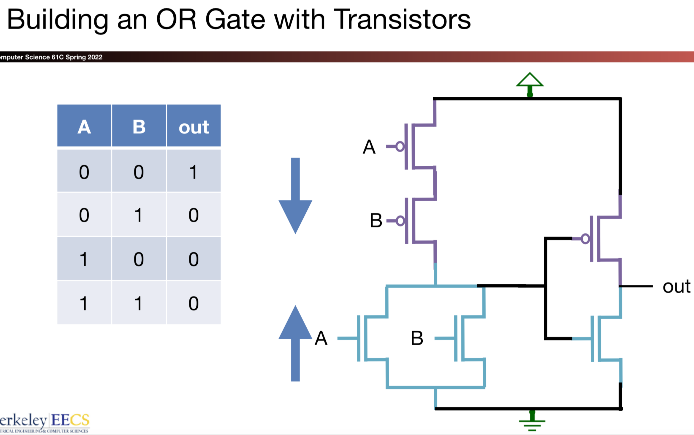
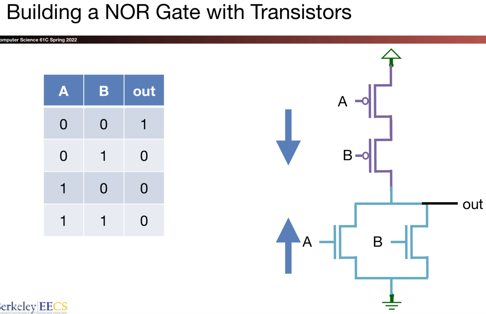
Transistors are not perfect switches; the leak when off and have finite resistance when on.
All circuits nodes have capacitance; to change their voltage level must displace charge.
This cause a water bucket analogy where the capacitors a filled or drained in time not instantly. Consequences: every logic gate has a delay from input change to output change, for cascaded gates delay accumulates.
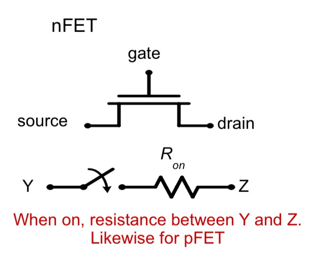
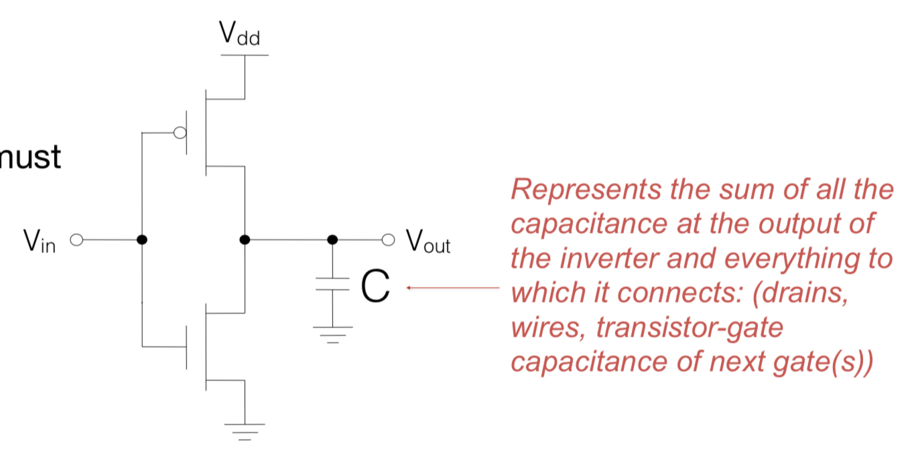
CMOS circuits use electrical energy.
Energy is the ability to do work(joules)
Power is the rate of expending energy(watts)
Energy Efficiency: energy per operation
E = 1/2 * C * V^2
P = 1/2 α C * V^2 * F(α=activity factor, C=total chip capacitance, F=clock frequency).
Power proportional to F, reducing frequency will reduce power. But that doesn't improve energy efficiency(just spread computation over longer time).
Energy Efficiency: E ∝ V^2 but τ ∝ V; therefore by lowering supply voltage energy efficiency is lowered, make up for less performance by using parallelism.